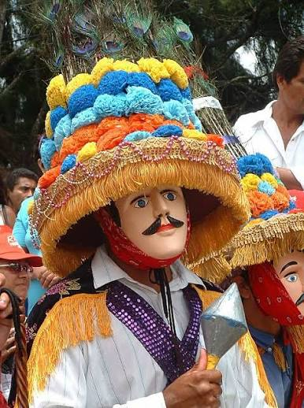

El Mestizaje
Masaya, considerada la Capital del Folclore Nicaragüense, destaca por el Traje de Mestizaje. Un vestido ostentoso, alegre y elegante que representa la mezcla entre la indumentaria indígena y los trajes de gala coloniales españoles.
Este traje se distingue por sus colores vibrantes y patrones intricados, que simbolizan la rica herencia cultural de la región.
La mujer que lo porta suele llevar un vestido largo y amplio, adornado con encajes y bordados, mientras que el hombre viste un traje elegante con chaleco y sombrero, reflejando la influencia española en la vestimenta.

← Volver a la Página Principal